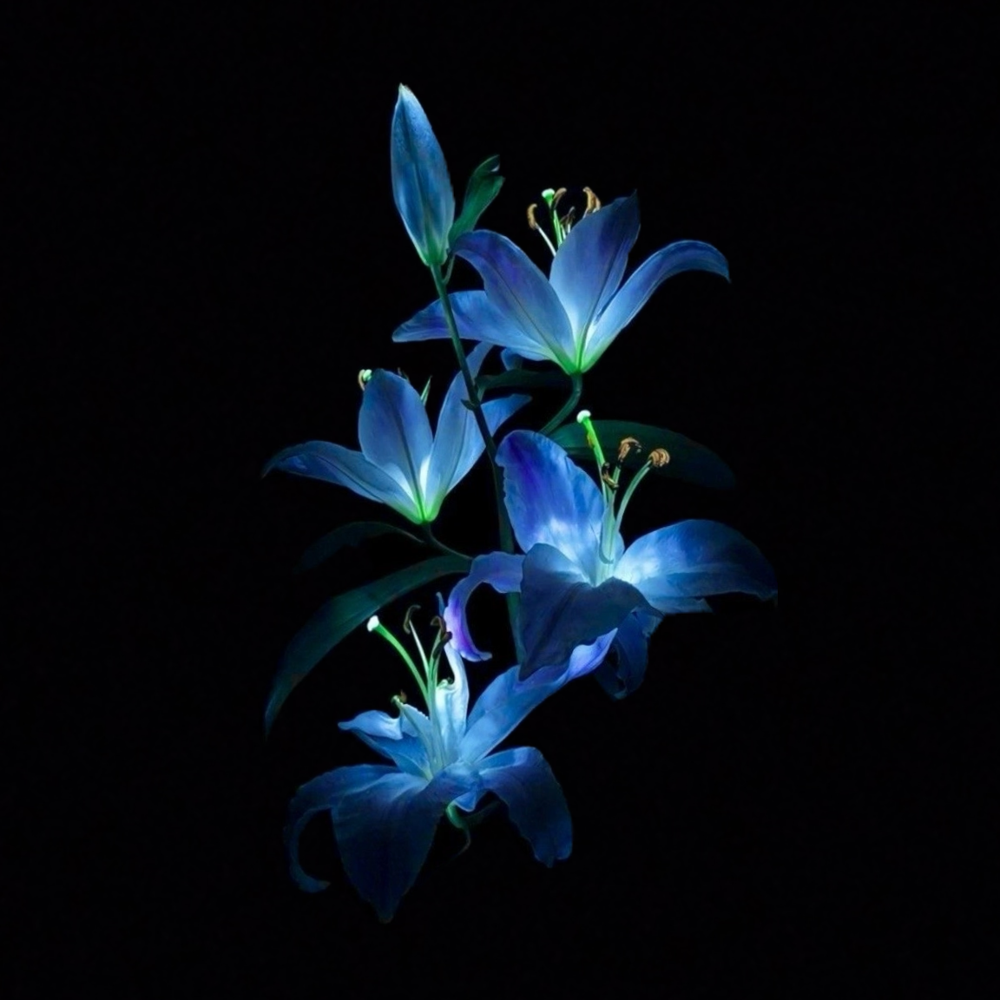

We're Saints and Fleurs- a high school run literary magazine based in Washington State
intended for youth writers to encourage submission and publication! You can find us on
Instagram as well
(
@saintsandfleurs).
Our editors in chief are Anvika Singh, Giya Agarwal, and Tim Yin, three students at Interlake High School.
We're an eager participant in the community of writing as a whole, nurturing it at our school
while increasing its awareness online, and advocate for writers everywhere to join,
participate, and spread the love. Valuing creativity and passion, we’re also strong
advocates for artists and encourage collaboration between the two creative communities!
As high schoolers, we’ve found difficulties at times while trying to spread our writing that
submissions into different literary contests and other credible publishing sources due to reasons like cost,
restrictive conditions on submissions, to region-related exclusivity, and most significantly
preserving the integrity of our ideas. It’s been discouraging to us both as writers and
as students. Young writers have deep and meaningful messages that should be shared to the world
regardless of where they’re from and what they have to say.
Students need accessible platforms for them to showcase who they are.
That’s why we started Saints and Fleurs, a litmag that all the youth can access and submit to.
